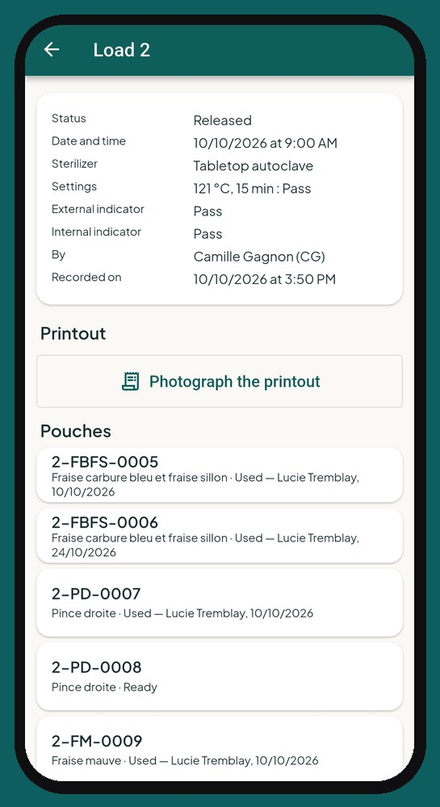

Sterilization log app: the cycle is done, and so is the log
The sterilizer is done, and so is the log.
Keeping a sterilization log by hand is slow and easy to forget. CliniQ Pro keeps it with you, cycle by cycle, pouch by pouch.
Every cycle recorded
Once the cycle is over, you record the time, the indicators read and the numbered pouches. Pouch codes can be read with the camera.

Spore tests have their place
Your spore tests are recorded in the same log as your cycles.
Traceability down to the patient
At the patient's home, you tap the pouch used: it is linked to the visit where it was used. If a batch is recalled, you know right away which patients are affected.
Ready the day you are asked
Your sterilization log is complete and up to date, with nothing to copy out.
The app is available in English and French.
Frequently asked questions
Is there a sterilization log?
Yes. You record your cycles, your numbered pouches and your spore tests. Each pouch used is linked to the visit where it was used.
What happens if a batch is recalled?
Since each pouch is linked to the visit where it was used, you know right away which patients are affected.
Launching January 1, 2027
See the app screen by screen, then reserve your spot: we'll write to you as soon as it opens.
A question? soutien@cliniqpromobile.ca
Features
- Scheduling and routes
- Patient records and notes
- Receipts and invoices
- Automatic mileage
- Expenses and accountant
- Home care services, all in one
- Questions and answers
- Pricing